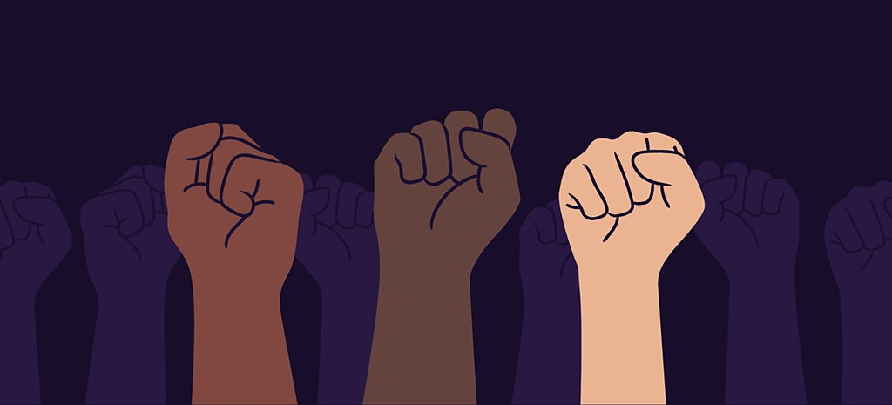

About Us
Three Rivers Pagans is an eclectic Pagan community representing Fort Wayne & Northeast Indiana.
Mission Statement
Three Rivers Pagans recognizes the growing number of people who are being drawn to New Age and Neo-Pagan thinking and beliefs. It is our goal to create and provide a safe place for all who seek to learn about, and be a part of, this wonderful and growing community in Northeast Indiana.

Learn More
Beliefs
Three Rivers Pagans is an eclectic Pagan community representing and welcoming all beliefs and traditions.
Ritual & Events
Three Rivers Pagans hosts rituals for each sabbat of the Pagan calendar as well as many events throughout the year.
Join Us
We are a vibrant community of friends that happily welcome new friends to our circle.
What We Believe
Three Rivers Pagans is an eclectic Pagan community that welcomes members of all beliefs. No matter your path, we look forward to walking this journey with you. If you are still searching for your path or wish to expand it, we are happy to provide you with resources to help you on your journey.
While we all walk different paths and have different beliefs, our community shares a few core beliefs:
Gender Identity & Sexual Orientation
Three Rivers Pagans affirms, supports, and welcomes all gender identities and sexual orientations. We celebrate that which makes us each unique and encourage our members to be their true selves. As such, our members are expected to be inclusive and supportive of others true selves as well.
Racial Equality
Three Rivers Pagans is a safe and welcoming place for friends of all races. As such, we stand by our friends of color and fight for racial equality and justice. We know that many symbols associated with the Pagan community have been stolen by many white supremacist groups, and we denounce the use of any Pagan symbology being used to promote hate as well as anyone claiming to be Pagan who furthers is hatred.